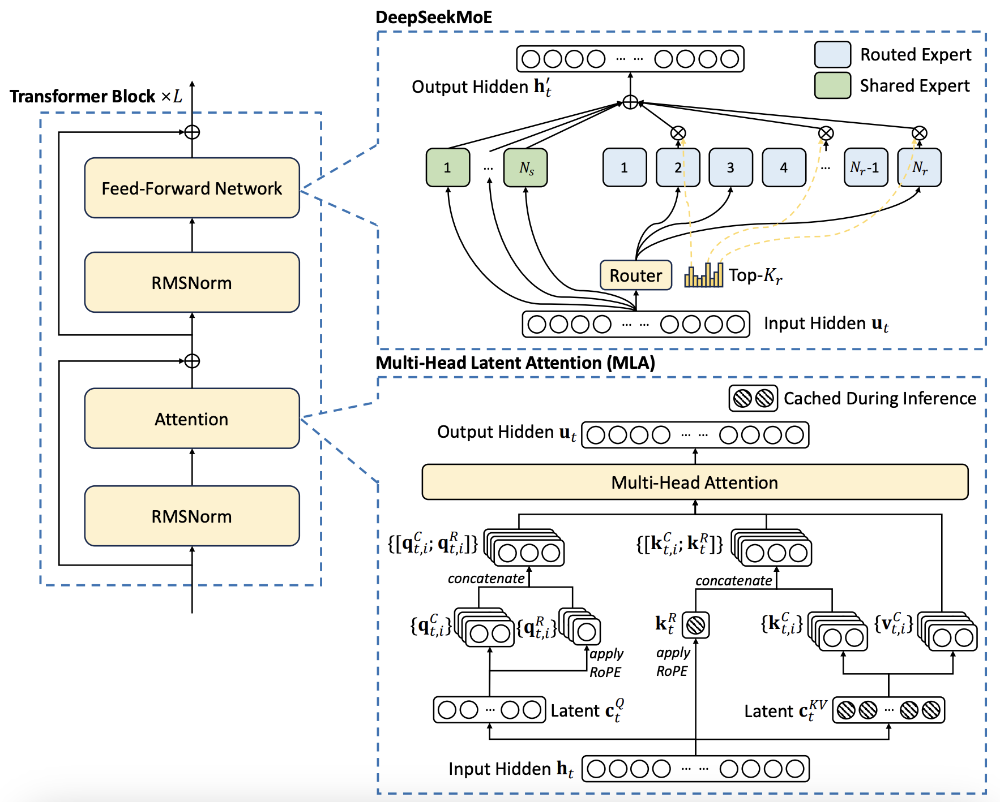
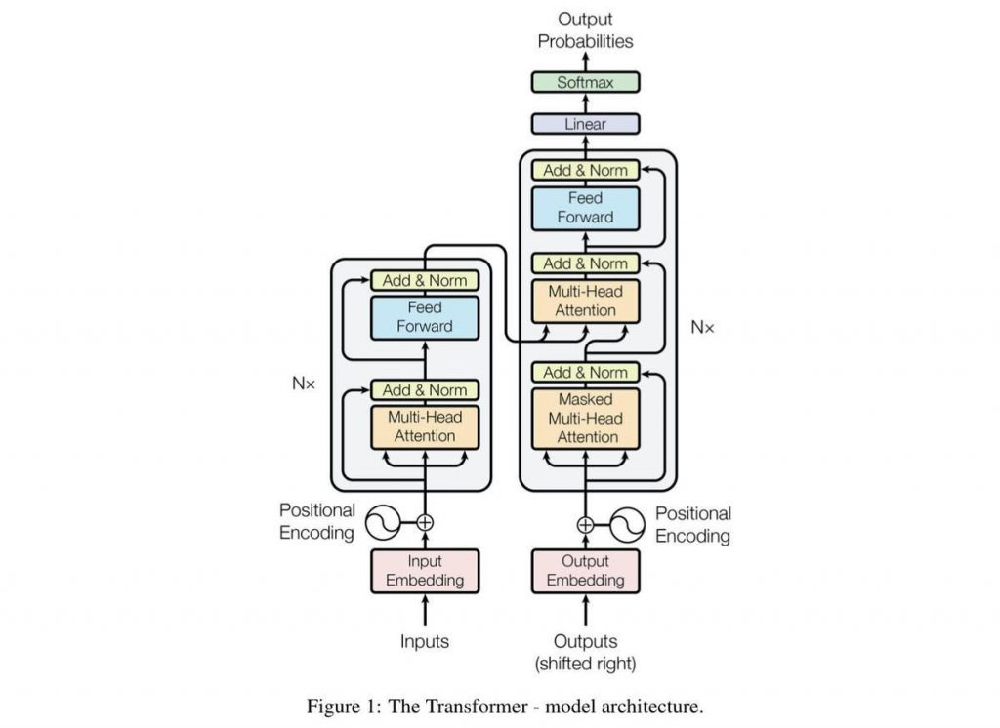
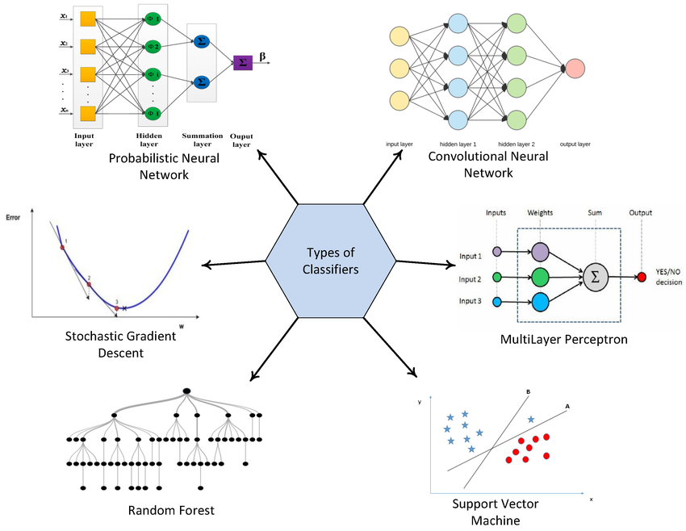
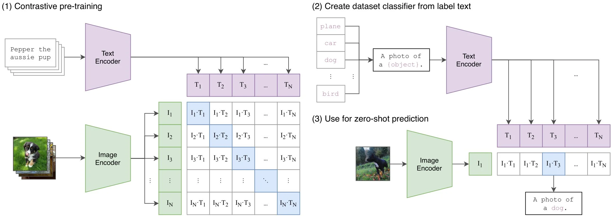
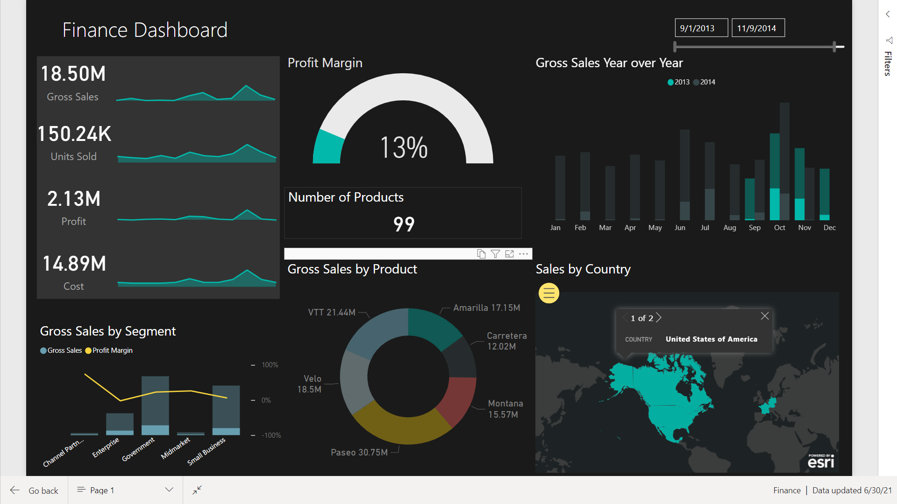
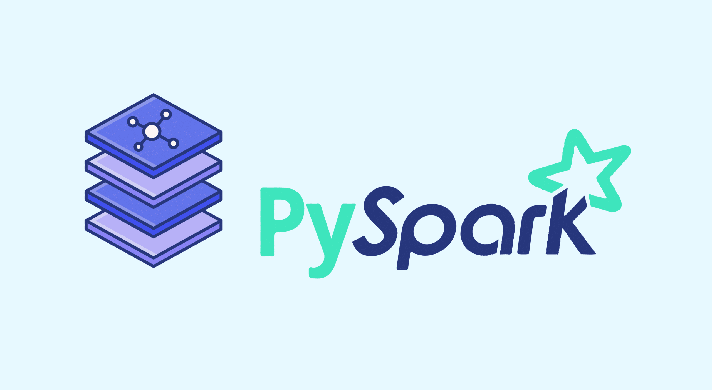
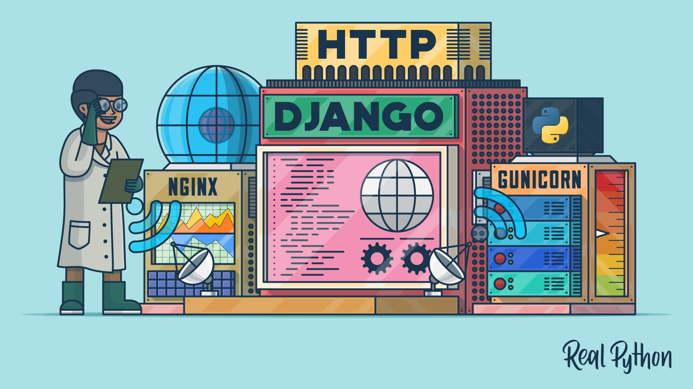
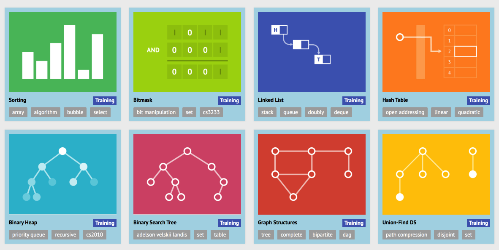

* Implemented the Deepseek-V3 transformer model architecture from scratch using PyTorch.
* The model is designed to perform image classification tasks efficiently.
View on GitHub
* Implemented the GPT-2 model architecture for text generation tasks from scratch.
* Trained the model on the "tiny-shakespeare" dataset, and then later on huggingface's fineweb-edu dataset, achieving impressive results.
View on GitHub
* Implemented and trained various classifiers using PyTorch, from scratch.
Binary Classifier Image Classifier Text Classifier Audio Classifier Image Classifier with Transfer Learning
* Implementation of Vision Transformer for image classification, from scratch.
View on GitHub
Power BI dashboards to visualize and analyze data from various sources.
Dummy Beginner
A beginner-level course on PySpark, covering the basics concepts of data processing and analysis using Spark.
View on Github
Django Web Applications showcase a collection of web applications built with the Django framework.
First Project Littlelemon Restaurant
Skilled in Dynamic Programming, Bit Manipulation, and hands-on Algorithm Implementations, leveraging LeetCode problem-solving to enhance analytical thinking, improve coding efficiency, and develop optimized solutions for complex challenges in software development.
Leetcode Bit Manipulation Dynamic Programming Algorithm ImplementationDeveloped assessments and study materials for several university courses, and helped improving student performance.
Specialisation in Data Science and Machine Learning
Developed ML models to analyze plant leaves using hyperspectral scanners for recombinant protein expression.
Developed a PIR sensor system for 3D mapping and movement tracking, enhancing spatial awareness.
Developed automated stock trading algorithms using ensemble machine learning models and Python.
Specialisation in Computer Science & Engineering
Used computer vision to automate serial code detection on vehicle parts, improving efficiency.
Developed CNNs for automated defect detection in welded surfaces using Python and Keras.
Designed monitoring software for a tunnel boring machine, reaching the final round of competition.
Researched and developed ML models for computer vision and NLP using TensorFlow & Keras.